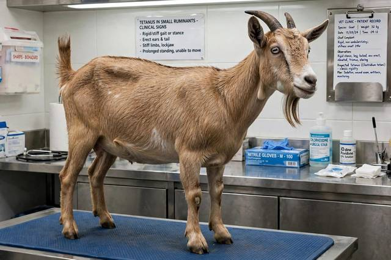
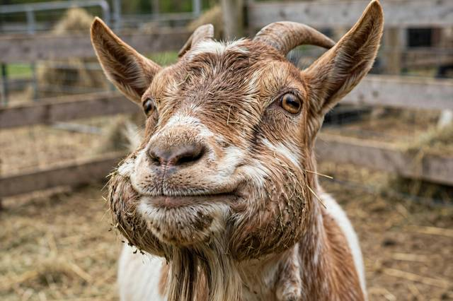
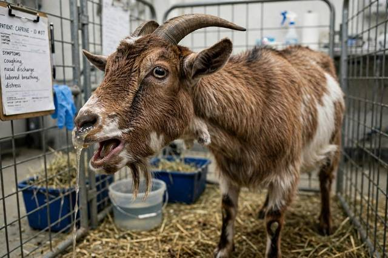
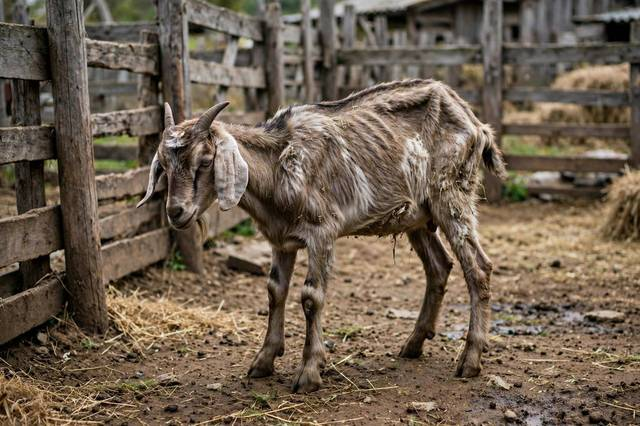
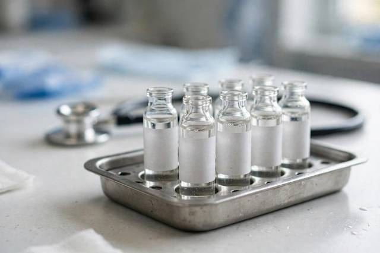

Tetanus, also called lockjaw, is a rapidly progressive disease caused by a toxin produced by bacteria that enter through wounds. It causes severe muscle stiffness and spasm, and it is often fatal once signs are advanced — but it is easily prevented by vaccination.
In Pakistan, tetanus (تشنج) occurs in goats after castration, dehorning, shearing cuts and kidding injuries, and in kids through the unhealed navel. It occurs worldwide wherever the bacteria live in soil and manure.
On this page: the cause, animals affected, clinical signs, diagnosis, treatment principles and prevention.
Cause
Tetanus is caused by Clostridium tetani, a bacterium that lives in soil and animal faeces. Its spores enter through wounds — especially deep, dirty wounds with little oxygen — and the bacteria release tetanus toxin, which attacks the nervous system and causes uncontrolled muscle contraction.
Pathogenesis
Clostridium tetani spores germinate in deep, dirty wounds where there is little oxygen, and the growing bacteria release tetanospasmin, one of the most powerful toxins known. The toxin travels along the peripheral nerves back to the spinal cord and brain, where it blocks the release of the inhibitory signals that normally tell muscles to relax.
Without these “off” signals, muscles contract continuously and cannot relax, producing the stiffness, lockjaw, erect ears, raised tail and the characteristic “sawhorse” stance. Any stimulus — light, sound or touch — can trigger violent spasms. The toxin also disturbs the autonomic nervous system, causing changes in heart rate and blood pressure. The wound itself may be small and already healed by the time signs appear, and the toxin already bound to the nerves cannot be removed by antitoxin — recovery depends on the nerves slowly growing new endings.
Animals Affected
All livestock can be affected, but goats and horses are especially susceptible. Kids can be infected through the navel soon after birth. People can also develop tetanus from wounds.
Clinical Signs
1
Stiffness and difficulty walking, with rigid, extended legs(Stiff, rigid legs and a stiff walk)
2
Ears held erect and a staring expression(Erect ears and a fixed stare)
3
Difficulty opening the mouth (lockjaw) and difficulty eating or swallowing(Jaw clamped shut, cannot eat or swallow)
4
Tail held stiffly(Tail held out stiffly)
5
Muscle spasms triggered by noise, touch or light(Spasms set off by sudden stimuli)
6
Difficulty breathing in advanced cases(Laboured breathing)
7
Animals remain alert but cannot move normally(Alert, but stiff and unable to move)
Stiffness and rigid legs

Erect ears, staring expression

LockjawTail held stifflyMuscle spasms

Difficulty breathing

Alert but cannot move
Diagnosis
Diagnosis is based on the typical signs and a history of a recent wound or procedure. There is no reliable laboratory test for tetanus — it is a clinical diagnosis, and other causes of stiffness must be ruled out.
Differential Diagnosis
Stiffness and spasms in goats can have other causes:
Enterotoxaemia — sudden death with nervous signs in well-fed animals, but without sustained rigidity and lockjaw.
Hypocalcaemia and hypomagnesaemia — muscle tremors and stiffness around kidding or on lush pasture; the animal usually responds quickly to mineral treatment.
Meningitis and other brain infections — nervous signs with fever and depression, but without the generalised rigidity of tetanus.
Treatment
Tetanus is a veterinary emergency. Treatment includes antitoxin, wound care and intensive nursing in a quiet, dark place, with muscle relaxants and supportive care as the veterinarian advises. Even with treatment, many animals do not survive once signs are advanced — which is why prevention matters so much.
Urgent: A stiff goat that cannot open its mouth needs a veterinarian immediately. Keep the animal in a quiet, dark place and avoid sudden noise or handling until the veterinarian arrives.
Recommended Medicines
1
Antitoxin – Tetanus antitoxin(To neutralise the tetanus toxin)As prescribed by a veterinarian
2
Antibiotic – Procaine penicillin G(To kill the tetanus bacteria at the wound site)22,000 IU/kg IM once daily
3
Supportive care – Muscle relaxant (vet-selected)(To ease muscle spasms and stiffness)As prescribed by a veterinarian
4
NSAID – Meloxicam(For pain and muscle stiffness)0.5–1 mg/kg IV/SC once (goats)
5
Fluid therapy – Oral electrolytes / IV fluids(To support hydration while the goat cannot eat or drink)As prescribed by a veterinarian
6
Topical – Topical antiseptic(To clean and protect the wound)As prescribed by a veterinarian
⚠ Important Tips:
Tetanus is a veterinary emergency — call the vet immediately.
Keep the goat in a quiet, dark place and avoid sudden noise or handling.
Use medicines only under veterinary advice.
Vaccinate with tetanus toxoid and clean and treat all wounds promptly.
Vaccination — follow the vet’s scheduleInjection — vet-administered only

Medicines — only as prescribed by a veterinarian
Prevention
Vaccinate with tetanus toxoid — it is included in routine clostridial vaccines, and kids need a primary course with a booster
Use clean, sterile instruments for castration, dehorning and ear tagging
Disinfect the navel of newborn kids
Clean and treat all wounds promptly
Keep vaccination records and give annual boosters
Key Takeaway
Tetanus is almost entirely preventable. A simple vaccination and clean wound care protect the whole flock.
Keep herd health records, consult a qualified veterinarian and follow the animal-health authority's current guidance for your region.
References
Standard veterinary references consulted for this guide:
MSD Veterinary Manual
Radostits et al., Veterinary Medicine: A Textbook of the Diseases of Cattle, Horses, Sheep, Pigs and Goats
WOAH Manual of Diagnostic Tests and Vaccines for Terrestrial Animals
FAO animal health manuals
Frequently Asked Questions
What are the symptoms of tetanus in goats?
Stiffness and difficulty walking, with rigid extended legs, ears held erect and a staring expression. Affected goats have difficulty opening the mouth (lockjaw) and eating or swallowing, and muscle spasms may be triggered by noise, touch or light.
What causes tetanus in goats?
Tetanus is caused by Clostridium tetani, a bacterium that lives in soil and animal faeces. Its spores enter through wounds, especially deep, dirty wounds, and release tetanus toxin, which attacks the nervous system.
How is tetanus in goats diagnosed?
Diagnosis is based on the typical signs and a history of a recent wound or procedure. There is no reliable laboratory test for tetanus, as it is a clinical diagnosis, and other causes of stiffness must be ruled out.
How is tetanus in goats treated?
Tetanus is a veterinary emergency. Treatment includes antitoxin, wound care and intensive nursing in a quiet, dark place, with muscle relaxants and supportive care as the veterinarian advises. Even with treatment, many animals do not survive once signs are advanced.
How can tetanus in goats be prevented?
Vaccinate with tetanus toxoid, which is included in routine clostridial vaccines, and give kids a primary course with a booster. Use clean, sterile instruments for castration, dehorning and ear tagging, and disinfect the navel of newborn kids.
Why is my goat stiff and cannot open mouth?
Stiffness with rigid legs and difficulty opening the mouth (lockjaw) are typical of tetanus. It is a veterinary emergency, so keep the animal in a quiet, dark place and call a veterinarian immediately.
What is tetanus vaccine for goats?
Tetanus toxoid is included in routine clostridial vaccines. Kids need a primary course with a booster, and adults need annual boosters, so keep vaccination records up to date.
بکری میں تشنج (Tetanus) کی علامات کیا ہیں؟
جسم میں اکڑن، ٹانگیں سیدھی ہو جانا، منہ کھولنے میں مشکل اور آواز یا چھونے پر جھٹکے تشنج کی علامات ہیں۔ یہ فوری ایمرجنسی ہے، جانور کو خاموش اندھیری جگہ رکھیں اور فوراً ویٹرنری ڈاکٹر کو بلائیں۔
اردو خلاصہ — کسانوں کے لیے آسان الفاظ میں
یہ بیماری کیا ہے؟
یہ بیماری زخم کے راستے داخل ہونے والے جراثیم کے زہر سے ہوتی ہے۔ جسم اکڑ جاتا ہے اور منہ کھلنا بند ہو جاتا ہے؛ آخری مرحلے پر یہ اکثر جان لیوا ہوتی ہے، مگر ویکسین سے آسانی سے بچی جا سکتی ہے۔
اہم علامات
اکڑن اور ٹانگیں سیدھی رکھ کر چلنے میں مشکل
کان کھڑے اور گھوری ہوئی نظر
منہ نہ کھلنا اور کھانے نگلنے میں تکلیف
دم اکڑی ہوئی
آواز، چھونے یا روشنی سے جھٹکے اور اینٹھن
آخری مرحلے میں سانس کی تکلیف
فوری علاج اور احتیاط
یہ ایمرجنسی ہے، فوراً ڈاکٹر کو بلائیں
ڈاکٹر اینٹی ٹاکسن، زخم کی صفائی اور پرسکون اندھیری جگہ میں دیکھ بھال کا انتظام کرتا ہے
خصی کرنے، سینگ کاٹنے اور کان کے کام میں صاف ستھرے اوزار استعمال کریں
بچوں کو ٹیٹنس والی کلوسٹریڈیل ویکسین مقررہ شیڈول سے ضرور لگوائیں
درست تشخیص اور خوراک کے لیے اپنے ویٹرنری ڈاکٹر سے رابطہ کریں۔
✍️ Written by Dr. Shahid Bilal Depal, DVM (PVMC RVMP #15068)
This guide is for educational purposes. Consult a registered veterinarian for diagnosis and treatment.